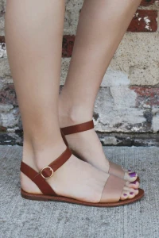
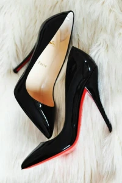
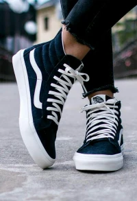
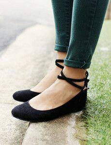
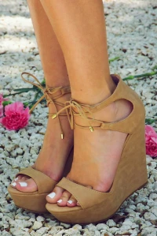
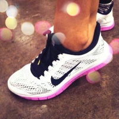
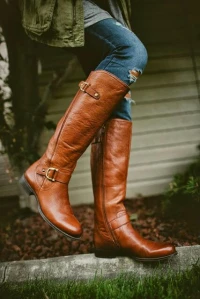

8 Types of Footwear Every Girl Must Own!
"Give a Woman the right shoes and she will conquer the world!" - Marilyn Monroe
In today's world, where women walk hand-in-hand with men, we're always on the go. Shoes play a vital role, needing to be comfortable yet stylish. Because there's no compromise on style, right ladies?
So, here I've curated 8 types of footwear that every woman should own:
Flat Sandals
A pair of flat sandals is a must-have in your shoe collection. Whether it's just another casual day of running errands or a brunch with friends, flat sandals can be the most comfortable choice. And they also come in so many different styles. So choose what suits your style!
Pumps
A pair of black and nude pumps in your shoe rack, and you're sorted for all those movie and dinner dates. They go really well with formal attire.
Sneakers
Sneakers are a major trend these days. They can be paired with almost everything, are super comfortable, and stylish.
Ballet flats
Ballet flats are comfortable yet very chic. You can wear them from work to party. Just anywhere. They can be teamed up with denims, dresses, skirts, shorts. Play around with a variety of colors and textures.
Wedged Heels
For all those short girls out there, wedged heels is a very smart choice. It makes you look tall without being uncomfortable like the spiked heels.
Metallic sandals:
A pair of metallic sandals is definitely a great pick. You don’t have to think a lot when pairing a gold or a silver metallic sandal as they go with almost every color outfit. For all my Indian friends, this is absolutely a must have. We all know what part gold and silver color play when it comes to Indian ethnic clothes.

Sports shoes
For all my fitness freak friends out there, i need not tell how important sports shoes are in our collection. They can also be styled for a casual look with your favourite denim and a basic tee.
Boots
And last but not the least, a pair of boots. It can be leather ones or suede, thigh high or ankle length, combat or with a little heel. They look effortlessly chic and stylish. Also, they keep you warm during winters.
